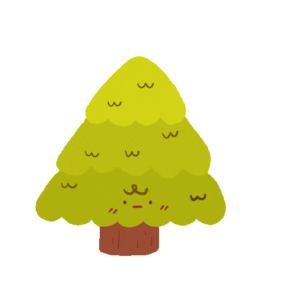

Forests in Myanmar
Myanmar is a southeast Asian country situated between latitudes 9º 58' to 28 longitudes 92º 10' to 101º 10' E. Diurnal temperatures range from 25ºC to 33ºC during the rainy season, and from 10ºC to 25ºC during the cold season, but can reach 43ºC in the hot season, particularly in the central dry zone. Rainfall is distributed over a five-month period and averages 800-5000mm per year. The forests are one of the greatest natural resources because they cover large areas and many of the trees and other plants in them have been used for timber, fire wood, and many other products. They are very important because they are needed for the conservation of water, soil and animal life resources.
Types of Forests
Myanmar is well endowed with forests and other natural resources. Forests cover about 40% of the total land area and are classified into two categories: reserved forests and unclassified (public) forests. There are a variety of different forest types across the country defined by local and regional conditions. These range from evergreen (16% of total forest cover), mixed deciduous forest (40%), dry forest (10%), deciduous dipterocarp forest (5%), hill and temperate evergreen forest (26%) and tidal swamp forest (4%), and the remainder non-tropical forest (FDMOECAF 2002). About 20.5 million ha of forest are designated for production, of which plantation forests form a total of 944,000 ha (roughly 3%) (FAO 2015). Commonly harvested species include Teak, and species similar to teak such as Pyinkado (Xylia dolabriformis, Xylia Kerri), Rosewood/Padauk (Pterocarpus macrocarpus), Htauk kyant (Terminalia tomentosa), among others (ITTO 2005).
| Naturally occuring | Planted |
|---|---|
| Black Pine Podocarp | Rubber tree |
| Merbau | |
| Teak | |
| Tentracentron |
Forest Products
Until 2014, Myanmar had no restrictions on log exports, which made round wood exports, especially teak, the dominant commercial forest product in the country. According to the ITTO Annual Review Statistics, in 2014, round wood exports amounted to nearly 2.3 million cubic meters worth US $1.66 billion. In addition, most of Myanmar’s harvested timber is exported out of the country into neighboring countries. Thus, with its decaying processing industry coupled with a sector designed predominantly for export, Myanmar is not gaining the benefits of its neighbors that are using stronger, value-added export systems to earn more for their forest products. In addition, it is believed that there is a high prevalence of illegal logging and wood smuggling within Myanmar’s forests. In 2013, foreign investment in Myanmar’s timber industry reached US$51 million, about half of which came from India, Myanmar’s previous top raw timber importer (The Irrawaddy 2014).
| Commercially Valuable Species | Scientific names |
|---|---|
| Teak | Tectona gradis |
| Pyinkado | Xylia dolabriformis |
| Padauk | Ptero macrocarpus |
| In(Kanyin) | Dipterocarpus tuberculateus & spp |
| Yemane | Gmelina arbonea |
| Hnaw | Adina cordifolia |
| Thitya | Shorea oblongifolia |
| Taukkyant | Terminalia tomentoda |
| Thadi | Protium serratum |
Deforestation
Forest erosion rate in Myanmar is reached to about 150,000 acres annually within five-year time and Myanmar stood third place in the list of countries most affected by deforestation, according to Forest Research Department under the Ministry of Natural Resources and Environmental Conservation. The timber production is reduced and stopped in the new government era and in some forest areas, the timber production is stopped up to ten years. According to the estimation made by the Food and Agriculture Organization of the United Nations (FAO), forest covered over 42 per cent of the land area in 2015.The FAO announced the list of forest cover areas five years a time and it will be announced the list in 2020.A total of 53 forest reserves with about one million acres in space are set up within three-year of current government tenure and forest covered areas reached to over 42 million acres at the present. Moreover four more natural reserve areas with over 130,000 acres of space are set up and it is reached to 43 natural reserve areas with over 9.7 million acres of space which covered 5.83 per cent of the country area.
| Causes | Effects |
|---|---|
| Logging, slashing-and-burning agriculture, clearing land for livestock, building dam and natural disasters | Global warming, climate changes, soil erosion, wild animals lose their home and starting going into the cities, villages, extinction of some animals |
| Climate changes | More natural disasters, a million acres of rice paddies and trees are destroyed, are killed three-fourths of the livestock |
| Soil erosion | Loss of soil fertility, fall of agricultural products, ecological, social and economic problem can be happened |
Solutions
- 1.As a part of a community, we should plant at least one tree to prevent deforestation.
- 2.When shopping, move towards buying recycled products mainly.
- 3.When at home, recycle as much as possible.
- 4.Do not buy meat products sourced from land where forests have been cleared.
- 5.Do not use firewood to heat up your fireplaces.
- 6.Encourage people to live in a way that doesn’t hurt environment.
- 7.Do not buy anything from large, multinationals that are actively or indirectly involved or responsible for the clearing of forest land.
- 8.Support companies that produce products by causing minimal harm to the environment.
- 9.You also need to practice what you preach.
"Let's save our planet by making it green and clean."


Ref:www.conserve-energy-future.com
Ref:www.fao.org